class: center, middle # Hi-C Data Analysis Bootcamp 2018 ## Harvard Medical School, Boston, MA #### Soo Lee, Nezar Abdennur, Peter Kerpedjiev, Fritz Lekschas --- class: center, middle # WiFi * Name: HMS Public * Open a browser, type an address (e.g google.com), then the HMS wifi page will be open instead. Scroll down to the bottom of thw page, click the button to agree. --- # Preparation ### Connect to a Linux VM instance on Amazon Cloud ``` ssh <username>@<aws_public_ip> ``` * username: ec2-user * passwd: bootcamp0508 --- # Docker for Hi-C pipeline and Higlass * List Docker images on your machine. ```bash docker images ``` ``` REPOSITORY TAG IMAGE ID CREATED SIZE gehlenborglab/higlass v0.2.63 1d9fe99415ac 3 weeks ago 2.7GB duplexa/4dn-hic v42 a1381e47a736 4 weeks ago 2.6GB hello-world latest 1815c82652c0 10 months ago 1.84kB ``` --- # Run docker * Create a Docker container from image `duplexa/4dn-hic:v42`, with a bash entry point * Mout the `~/data` directory as `/d/` inside the container using the `-v` option ``` ls ls data ``` ``` docker run -it -v ~/data:/d/:rw duplexa/4dn-hic:v42 bash ``` ``` ls ls /d ``` * cd into the data directory ``` cd /d/ ``` --- # Practice! Hi-C data processing pipeline 1. Mapping * Tools : `bwa`, `samtools` * output: `bam` file 2. Filtering / sorting / Creating a list of contacts * Tools: `pairsamtools`, `pairix` * outputs: `pairs`, `bam`, `pairsam` files 3. Binning & Normalization * Tools: `cooler` * outputs: `cool` file 4. Aggregation (for HiGlass) * Tools: `cooler` * outputs: `multires.cool` (`mcool`) file --- # Ingredients * input Hi-C data in the FASTQ format: ``` input_R1.fastq input_R2.fastq ``` * bwaIndex (hg38) - reference genome formatted for bwa ``` hg38.fasta* ``` * chrom size (hg38) - text file listing the chromosomes and their sizes ``` hg38.mainonly.chrom.size ``` --- # Output files * they will be generated through this session. ``` output.bam parsed.pairsam.gz, sorted.pairsam.gz, deduped.pairsam.gz, output.pairs.gz output.cool ``` * In case you could not generate an output file, but move on to the next step, use our prebaked output files. ``` output.prebaked.bam output.prebaked.pairs.gz output.prebaked.cool ``` --- # Alignment! * Tools : * `bwa` (http://bio-bwa.sourceforge.net/) : alignment * `samtools` (https://samtools.github.io/) : format conversion (sam->bam) * Usage ```bash bwa mem -SP5M -t8 <index> <fastq1> <fastq2> | samtools view -bhS - > <outbam> ``` * input: `fastq` files, bwa genome index files * output: `bam` file * `-SP5M` : Hi-C-specific options * Add `-t <ncores>` to `bwa mem` to use multiple cores (e.g. `-t 4`) * Command ```bash bwa mem -SP5M -t8 hg38.fasta input_R1.fastq input_R2.fastq | \ samtools view -bhS - > output.bam ``` --- # How to read a `bam` file * A `bam` file is a binary file that stores alignment information for sequenced reads * Tools : * `samtools` (https://samtools.github.io/) : viewing a bam file * Command ```bash samtools view output.bam | less -S ``` * SAM/BAM format: https://samtools.github.io/hts-specs/SAMv1.pdf * Example lines ```bash SRR1658581.203938 81 chr5 76758064 0 51M50S = 76757789 -326 GGGGTTTTACCTTGTTGGCCAGGCTGGTCTTGAACTCCTGACCTCATGATCGATCATCACCATCTTGGTTTTGGTGGGTTTTGGCCGGCTTCCTTACTGCA .BB@DCCC@DCDDBBBDDDDCDDDDDDDDEDCC>DECCEEEFFHGHHHJIGIJJJJHHFIIIJIIJHIJJJJJJJJJJJJJJJIJJJJHHHHHFFFFFCCC NM:i:0 MD:Z:51 AS:i:51 XS:i:48 SA:Z:chr5,76780991,+,51M50S,0,0; SRR1658581.203938 2113 chr5 76780991 0 51M50H = 76757789 -23203 TGCAGTAAGGAAGCCGGCCAAAACCCACCAAAACCAAGATGGTGATGATCG CCCFFFFFHHHHHJJJJIJJJJJJJJJJJJJJJIHJIIJIIIFHHJJJJIG NM:i:0 MD:Z:51 AS:i:51 XS:i:43 SA:Z:chr5,76758064,-,51M50S,0,0; SRR1658581.203938 161 chr5 76757789 60 101M = 76758064 326 TTGATTTTTCCTTCTGGACAGGCTCCAATATGGCTCTGTGCAGCACTGTTATTGGTCCTGTCGTTACTGAAAATTCTGATTTTTTTTTTTTGGAAACGGAG CCCFFFFFHHHHHJJJJJJJJJJEHJJJJIIIJFEIJIHIIJIIIGIIHHEIIEGHGHGIFHIHIGIGIIJJHGHHHH;?CEEDDDDDDDD<-4>AC?B85 NM:i:0 MD:Z:101 AS:i:101 XS:i:0 ``` --- # Filtering! * Tools : * `pairsamtools` (https://github.com/mirnylab/pairsamtools) : filtering * Steps * Parse : annotate reads, create a `pairsam` file * Sort : sort by chromosome1-chromosome2-position1-position2 * Dedup : Mark PCR duplicates * Select : Filter valid Hi-C reads * Split : create a `pairs` or `bam` file * input: `bam` file * output: `pairs` file * intermediate: `pairsam` files --- # Filtering! * Tools : * `pairsamtools` (https://github.com/mirnylab/pairsamtools) : filtering * Pair types <p style="text-align: center"> <img src="http://pairsamtools.readthedocs.io/en/latest/_images/terminology.png" width="600" /> </p> --- # Filtering! * Tools : * `pairsamtools` (https://github.com/mirnylab/pairsamtools) : filtering * Pair types <p style="text-align: center"> <img src="http://pairsamtools.readthedocs.io/en/latest/_images/read_pair_NU_NN.png" width="600" /> </p> <p style="text-align: center"> <img src="http://pairsamtools.readthedocs.io/en/latest/_images/read_pair_UR.png" width="400" /> </p> --- # Filtering! * Tools : * `pairsamtools` (https://github.com/mirnylab/pairsamtools) : filtering * Parse / sort Usage ```bash samtools view -h <input_bam_file> | pairsamtools parse -c <chromsize_file> --output <parsed_pairsam> pairsamtools sort --nproc 8 --output <sorted_pairsam> <parsed_pairsam> ``` Commands ```bash samtools view -h output.bam | pairsamtools parse -c hg38.mainonly.chrom.size --output parsed.pairsam.gz pairsamtools sort --nproc 8 --output sorted.pairsam.gz parsed.pairsam.gz gunzip -c sorted.pairsam.gz |less -S # check your output file! ``` * input: `bam` file * output: `pairsam` file * intermediate: `pairsam` file --- # Filtering! * Tools : * `pairsamtools` (https://github.com/mirnylab/pairsamtools) : filtering * Dedup / Select / Split Usage ```bash pairsamtools dedup --mark-dups --output <deduped_pairsam> <sorted_pairsam> pairsamtools select <select_condition> \ --output <filtered_pairsam> <deduped_pairsam> pairsamtools split --output-pairs <output_pairs> <filtered_pairsam> ``` Commands ```bash pairsamtools dedup --mark-dups --output deduped.pairsam.gz sorted.pairsam.gz pairsamtools select \ '(pair_type == "UU") or (pair_type == "UR") or (pair_type == "RU")' \ --output filtered.pairsam.gz deduped.pairsam.gz pairsamtools split --output-pairs output.pairs.gz filtered.pairsam.gz ``` * input: `pairsam` file * output: `pairs` file * intermediate: `pairsam` files --- # Pairs file * A `pairs` file is a block-gzipped text file that stores list of contact loci * Tools: * `pairix` (https://github.com/4dn-dcic/pairix) : indexing & querying `pairs` files * Command ```bash pairix output.pairs.gz # indexing pairix output.pairs.gz 'chr2:1-60000000|chr4:5000000-6000000' # querying ``` * Pairs format: https://github.com/4dn-dcic/pairix/blob/master/pairs_format_specification.md * Example lines ```bash #columns: readID chr1 pos1 chr2 pos2 strand1 strand2 EAS139:136:FC706VJ:2:2104:23462:197393 chr1 10000 chr1 20000 + + EAS139:136:FC706VJ:2:8762:23765:128766 chr1 50000 chr1 70000 + + ``` --- # Binning! * Tools: * `cooler` (https://github.com/mirnylab/cooler) * Usage ```bash cooler cload pairix <chrsize_file>:<bin_size> <pairs_file> <out_prefix>.cool ``` * input: `pairs` file, `chromsize` file * output : `cool` file * binsize : e.g.) 5000 (high resolution), 500000 (lower resolution) * Command ```bash cooler cload pairix hg38.main.chrom.sizes:500000 output.pairs.gz output.cool ``` --- # How to read a `cool` file * A `cool` file is an HDF5-format file that stores contact matrices and normailzation vectors. * Tools: * `cooler` (https://github.com/mirnylab/cooler) * Command ```bash cooler dump -t pixels --header --join -r chr19 out.cool ``` * Cool format : http://cooler.readthedocs.io/en/latest/datamodel.html --- # Normalization! (Matrix balancing) * Tools: * `cooler` (https://github.com/mirnylab/cooler) * Command ```bash cooler balance <cool_file> ``` * input : `cool` file * output : `cool` file * To read a 'normalized' matrix, add `-b` to the `cooler dump` command. --- # Distiller * A modular Hi-C mapping pipeline for reproducible data analysis. * Nextflow/Docker-based pipeline * https://github.com/mirnylab/distiller-nf --- # Visualization To explore the features of a matrix, it helps to be able to see the data. Example with HiGlass: <p style="text-align: center"> 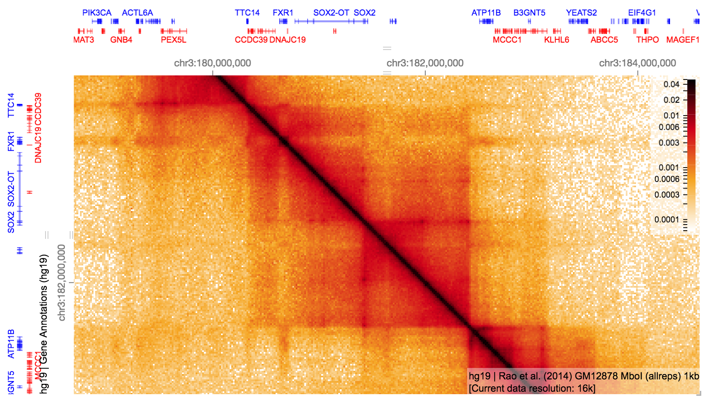 </p> --- # Existing tools <p style="text-align: center"> <table style="margin: 0px auto"> <tr> <td> Juicebox </td> <td> 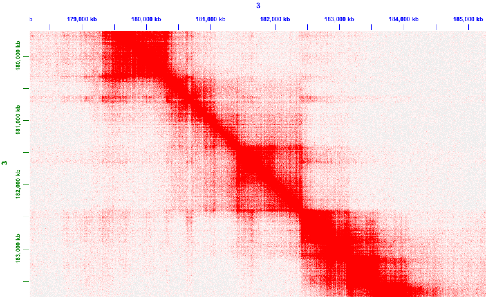 </td> </tr> <tr> <td>WashU Epigenome Browser</td> <td>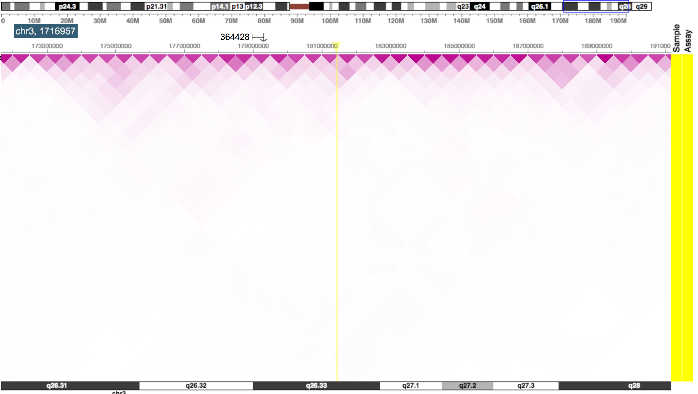</td> </tr> <tr> <td> 3D Genome Browser </td> <td>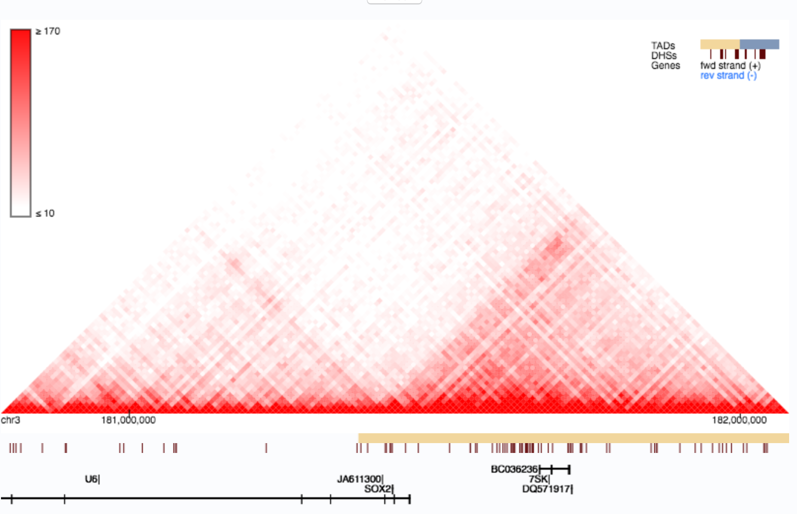</td> </tr> </table> </p> --- # HiGlass <p style="text-align: center"> 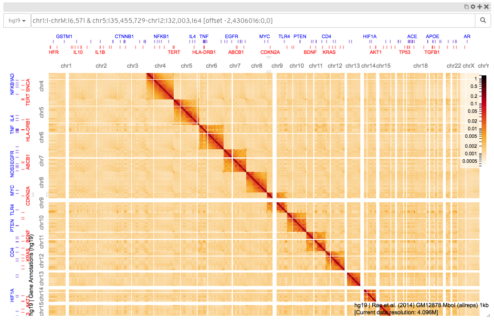 </p> HiGlass is a viewer for HiC and other genomic data. It can be used online (<a href="http://higlass.io/" >http://higlass.io</a>), or run locally with private data. <h3> </h3> --- # Capabilities HiGlass is designed to facilitate the comparison of multiple genomic datasets through "tracks" and "views". <p style="text-align: center"> 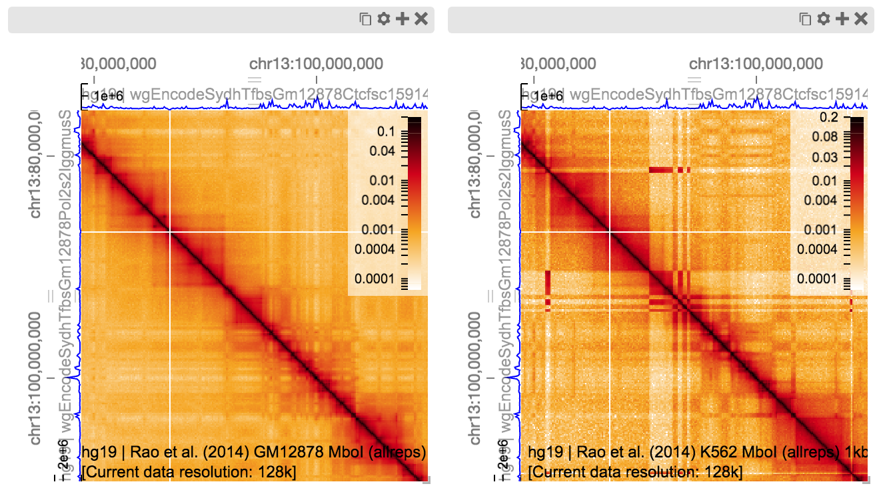 </p> --- # Anatomy of HiGlass <table> <tr> <td> <p style="text-align: center"> 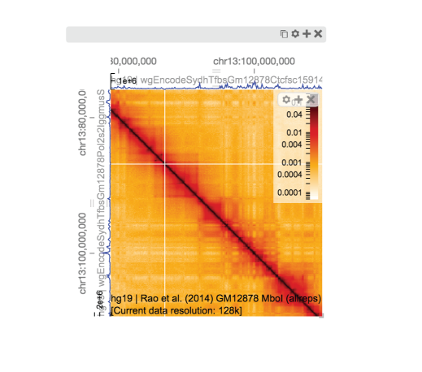 </p> </td> <td> <p style="margin-left: 15px"> HiGlass is composed of a collection of views and tracks. </p> </td> </tr> </table> --- # Anatomy of HiGlass <table> <tr> <td> <p style="text-align: center"> 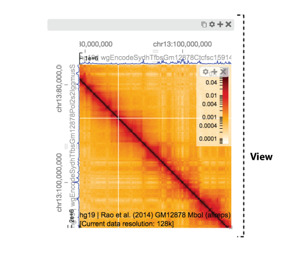 </p> </td> <td> <p style="margin-left: 15px"> Each view is composed of a set of tracks which share common axes. </p> </td> </tr> </table> --- # Anatomy of HiGlass <table> <tr> <td> <p style="text-align: center"> 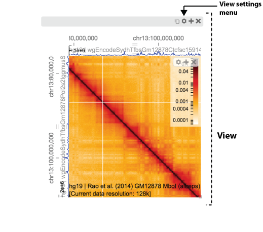 </p> </td> <td> <p style="margin-left: 15px"> Settings related to the view can be accessed via the "view settings" menu. </p> </td> </tr> </table> --- # Anatomy of HiGlass <table> <tr> <td> <p style="text-align: center"> 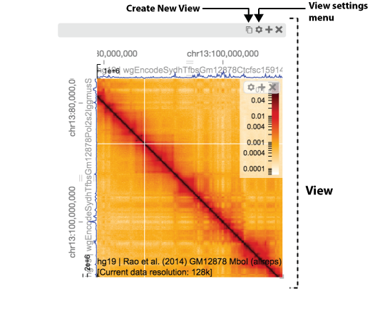 </p> </td> <td> <p style="margin-left: 15px"> New views can be created by cloning an existing view. </p> </td> </tr> </table> --- # Anatomy of HiGlass <table> <tr> <td> <p style="text-align: center"> <img src="img/higlass-anatomy-7.png" width=400/> </p> </td> <td> <p style="margin-left: 15px"> Views can be closed by clicking on the "close view" button ("X"). </p> </td> </tr> </table> --- # Anatomy of HiGlass <table> <tr> <td> <p style="text-align: center"> 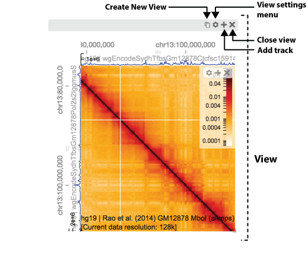 </p> </td> <td> <p style="margin-left: 15px"> The contents of a view can be modified by adding tracks. </p> </td> </tr> </table> --- # Anatomy of HiGlass <table> <tr> <td> <p style="text-align: center"> 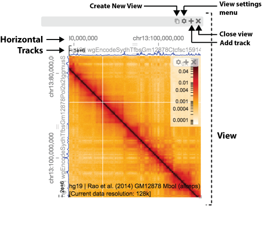 </p> </td> <td> <p style="margin-left: 15px"> Tracks can be layed out horizontally where they track the horizontal axis. </p> </td> </tr> </table> --- # Anatomy of HiGlass <table> <tr> <td> <p style="text-align: center"> 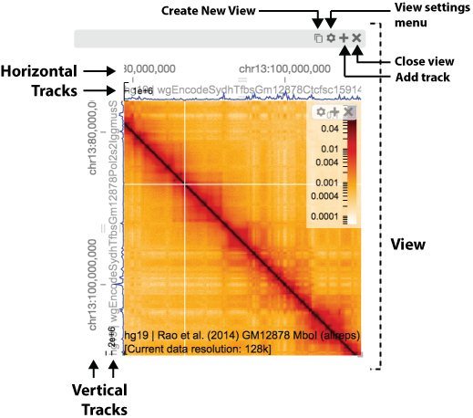 </p> </td> <td> <p style="margin-left: 15px"> Tracks can also be layed out vertically where they track the vertical axis. </p> </td> </tr> </table> --- # Anatomy of HiGlass <table> <tr> <td> <p style="text-align: center"> 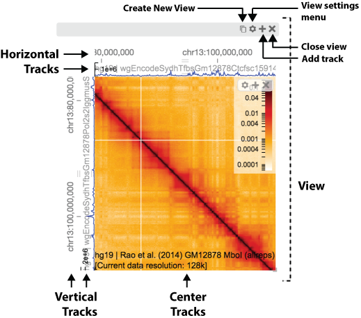 </p> </td> <td> <p style="margin-left: 15px"> And tracks can be placed in the center, where they move along both axes. </p> </td> </tr> </table> --- # Anatomy of HiGlass <table> <tr> <td> <p style="text-align: center"> 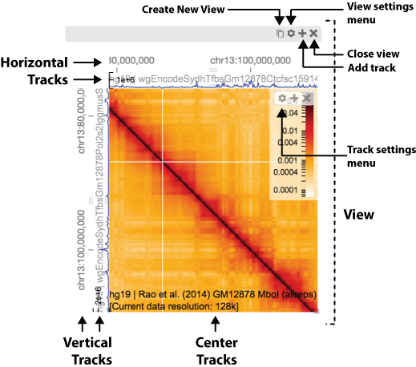 </p> </td> <td> <p style="margin-left: 15px"> Track settings can be adjusted via the track settings menu. </p> </td> </tr> </table> --- # Anatomy of HiGlass <table> <tr> <td> <p style="text-align: center"> 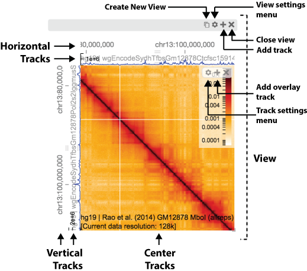 </p> </td> <td> <p style="margin-left: 15px"> Overlays can be added on top of existing tracks by clicking on the '+' icon of the track toolbar. </p> </td> </tr> </table> --- # Anatomy of HiGlass <table> <tr> <td> <p style="text-align: center"> 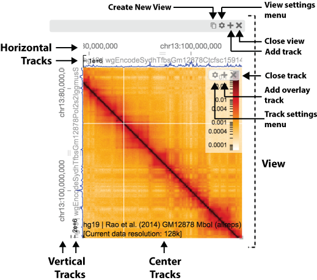 </p> </td> <td> <p style="margin-left: 15px"> Tracks can be closed by clicking on the 'X' of the track toolbar. </p> </td> </tr> </table> --- # Practical exercise Re-create this figure: <p style="text-align: center"> <img src="https://cloud.githubusercontent.com/assets/2143629/24535688/a6043f1a-15a3-11e7-8197-d5d3ce227bc6.png" height=400/> </p> --- # Creating a local instance Start a HiGlass instance and expose it to the outside world using the `--site-url` parameter. ``` higlass-manage start --site-url $PUBLIC_IP ``` --- # Creating a local instance Start a HiGlass instance and expose it to the outside world using the `--site-url` parameter. ``` higlass-manage start --site-url $PUBLIC_IP ``` ## Add data ``` higlass-manage ingest ~/data/Schwarzer-et-al-2017-UNTR.multi.cool higlass-manage ingest ~/data/Schwarzer-et-al-2017-NIPBL.multi.cool higlass-manage ingest ~/data/Schwarzer-et-al-2017-RNAseq-minus.bw ``` --- class: center, middle ## Navigate to HiGlass website Get the IP of the AWS instance hosting HiGlass: ``` [ec2-user@ip-172-31-26-229 ~]$ echo $PUBLIC_IP 54.145.184.38 ``` And navigate to it using port 8989: <p style="text-align: center"> <video width="500" loop="loop" autoplay="autoplay"> <source src="https://s3.amazonaws.com/pkerp/public/img/hic-bootcamp-presentation/navigate-to-higlass-url.mp4" type="video/mp4"> </video> </p> --- # Toggle the position bar The genome position search bar serves to show the visible extent of the data. It can also be used to navigate to a particular locus. <p style="text-align: center"> <video width="800" loop="loop" autoplay="autoplay"> <source src="https://s3.amazonaws.com/pkerp/public/img/hic-bootcamp-presentation/toggle-position-search-box.mp4" type="video/mp4"> </video> </p> * Note that just because an assembly is selected, that doesn't constrain the data shown. It is up to the user to add datasets from a matching assembly. --- # Add a 1D track and change its type * To start, we'll add the RNA-Seq dataset as a track on top of the view: * After adding it, we'll change it's type to `horizontal-bar` (from `horizontal-line`) <p style="text-align: center"> <video width="600" loop="loop" autoplay="autoplay"> <source src="https://s3.amazonaws.com/pkerp/public/img/hic-bootcamp-presentation/add-top-bar-track.mp4" type="video/mp4"> </video> </p> --- # Add a heatmap Next we'll add one of the heatmaps to the center of the view: <p style="text-align: center"> <video width="600" loop="loop" autoplay="autoplay"> <source src="https://s3.amazonaws.com/pkerp/public/img/hic-bootcamp-presentation/add-heatmap-track.mp4" type="video/mp4"> </video> </p> --- # Add gene annotations We'll add gene annotations to the top. <p style="text-align: center"> <video width="600" loop="loop" autoplay="autoplay"> <source src="https://s3.amazonaws.com/pkerp/public/img/hic-bootcamp-presentation/add-gene-annotations.mp4" type="video/mp4"> </video> </p> --- # Resize the current view and replicate it * We want to create four views in total showing two different datasets * To start, we'll resize the current view and replicate it twice <p style="text-align: center"> <video width="600" loop="loop" autoplay="autoplay"> <source src="https://s3.amazonaws.com/pkerp/public/img/hic-bootcamp-presentation/resize-and-clone-twice.mp4" type="video/mp4"> </video> </p> --- # Replace existing dataset and copy it * Now we'll replace one of the datasets and clone that view as well * Since we already have the NIPBL condition, we'll replace the second view with UNTR (wt) <p style="text-align: center"> <video width="600" loop="loop" autoplay="autoplay"> <source src="https://s3.amazonaws.com/pkerp/public/img/hic-bootcamp-presentation/resize-and-clone-twice.mp4" type="video/mp4"> </video> </p> --- # Lock zoom and location * Let's make sure the top two rows and the bottom two rows always show the same locations as each other <p style="text-align: center"> <video width="600" loop="loop" autoplay="autoplay"> <source src="https://s3.amazonaws.com/pkerp/public/img/hic-bootcamp-presentation/take-and-lock-zoom-and-location.mp4" type="video/mp4"> </video> </p> --- # Go to interesting locations ## Zoom top to: By providing a set of genomic coordinates, we can zoom to a defined region in the heatmap. ``` chr14:50,143,364-88,897,098 & chr14:70,582,768-97,882,196 [offset 0,0:0,0] ``` ## Zoom bottom to: ``` chr14:66,384,132-76,643,845 & chr14:67,964,160-79,229,728 [offset 0,0:0,0] ``` --- # Go to interesting locations <p style="text-align: center"> <video width="600" loop="loop" autoplay="autoplay"> <source src="https://s3.amazonaws.com/pkerp/public/img/hic-bootcamp-presentation/zoom-top-and-bottom-to.mp4" type="video/mp4"> </video> </p> --- # Project viewport Projecting a viewport shows the extent of one view on another. In this case, we're showing the extent of the bottom views on the top. <p style="text-align: center"> <video width="600" loop="loop" autoplay="autoplay"> <source src="https://s3.amazonaws.com/pkerp/public/img/hic-bootcamp-presentation/project-viewport-on.mp4" type="video/mp4"> </video> </p> --- # Share a link Finally, we can export our completed figure as a link: <p style="text-align: center"> <video width="600" loop="loop" autoplay="autoplay"> <source src="https://s3.amazonaws.com/pkerp/public/img/hic-bootcamp-presentation/export-views-as-link.mp4" type="video/mp4"> </video> </p> --- # Documentation: * HiGlass Documentation * <a href="https://github.com/hms-dbmi/higlass/wiki">https://github.com/hms-dbmi/higlass/wiki</a> * Examples * <a href="http://higlass.io/examples">http://higlass.io/examples</a> ---